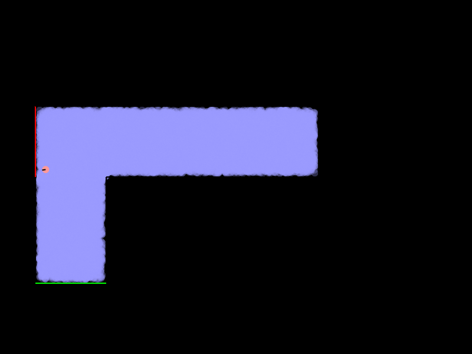
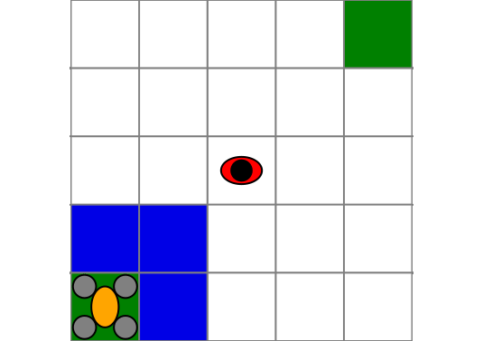
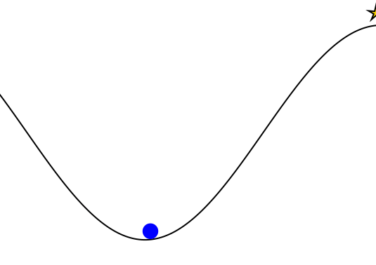
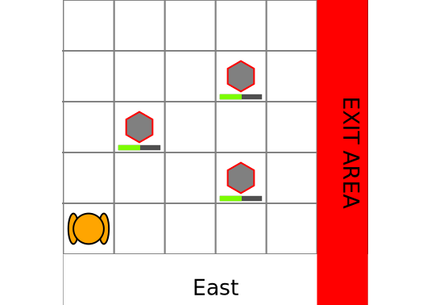
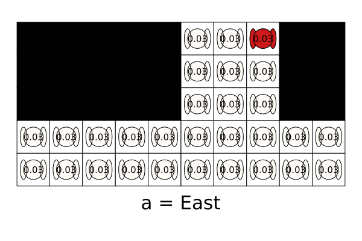

Gallery of POMDPs.jl Problems
A gallery of models written for POMDPs.jl with visualizations. To view these visualizations on your own machine, the code is provided below each visualization.
EscapeRoomba
Originally, an optional final project for AA228 at Stanford in Fall 2018. A Roomba equipped with a LIDAR or a bump sensor needs to try to find the safe exit (green) without accidentally falling down the stairs (red).

using POMDPs
using POMDPTools
using POMDPGifs
using BasicPOMCP
using Random
using ParticleFilters
using Cairo
using LinearAlgebra
# If you don't have RoombaPOMDPs installed, uncomment the following two lines
# using Pkg
# Pkg.add(url="https://github.com/sisl/RoombaPOMDPs.git")
using RoombaPOMDPs
# Let's only consider discrete actions
roomba_actions = [RoombaAct(2.0, 0.0), RoombaAct(2.0, 0.7), RoombaAct(2.0, -0.7)]
pomdp = RoombaPOMDP(;
sensor=Bumper(),
mdp=RoombaMDP(;
config=2,
discount=0.99,
contact_pen=-0.1,
aspace=roomba_actions
)
)
# Define the belief updater
num_particles = 20000
v_noise_coefficient = 0.0
om_noise_coefficient = 0.4
resampler=LowVarianceResampler(num_particles)
rng = MersenneTwister(1)
belief_updater = RoombaParticleFilter(
pomdp, num_particles, v_noise_coefficient,
om_noise_coefficient,resampler, rng
)
# Custom update function for the particle filter
function POMDPs.update(up::RoombaParticleFilter, b::ParticleCollection, a, o)
pm = up._particle_memory
wm = up._weight_memory
ps = []
empty!(pm)
empty!(wm)
all_terminal = true
for s in particles(b)
if !isterminal(up.model, s)
all_terminal = false
a_pert = RoombaAct(a.v + (up.v_noise_coeff * (rand(up.rng) - 0.5)), a.omega + (up.om_noise_coeff * (rand(up.rng) - 0.5)))
sp = @gen(:sp)(up.model, s, a_pert, up.rng)
weight_sp = pdf(observation(up.model, sp), o)
if weight_sp > 0.0
push!(ps, s)
push!(pm, sp)
push!(wm, weight_sp)
end
end
end
while length(pm) < up.n_init
a_pert = RoombaAct(a.v + (up.v_noise_coeff * (rand(up.rng) - 0.5)), a.omega + (up.om_noise_coeff * (rand(up.rng) - 0.5)))
s = isempty(ps) ? rand(up.rng, b) : rand(up.rng, ps)
sp = @gen(:sp)(up.model, s, a_pert, up.rng)
weight_sp = obs_weight(up.model, s, a_pert, sp, o)
if weight_sp > 0.0
push!(pm, sp)
push!(wm, weight_sp)
end
end
# if all particles are terminal, issue an error
if all_terminal
error("Particle filter update error: all states in the particle collection were terminal.")
end
# return ParticleFilters.ParticleCollection(deepcopy(pm))
return ParticleFilters.resample(up.resampler,
WeightedParticleBelief(pm, wm, sum(wm), nothing),
up.rng)
end
solver = POMCPSolver(;
tree_queries=20000,
max_depth=150,
c = 10.0,
rng=MersenneTwister(1)
)
planner = solve(solver, pomdp)
sim = GifSimulator(;
filename="examples/EscapeRoomba.gif",
max_steps=100,
rng=MersenneTwister(3),
show_progress=false,
fps=5)
saved_gif = simulate(sim, pomdp, planner, belief_updater)
println("gif saved to: $(saved_gif.filename)")gif saved to: examples/EscapeRoomba.gifDroneSurveillance
Drone surveillance POMDP from M. Svoreňová, M. Chmelík, K. Leahy, H. F. Eniser, K. Chatterjee, I. Černá, C. Belta, "Temporal logic motion planning using POMDPs with parity objectives: case study paper", International Conference on Hybrid Systems: Computation and Control (HSCC), 2015.
In this problem, the UAV must go from one corner to the other while avoiding a ground agent. It can only detect the ground agent within its field of view (in blue).

using POMDPs
using POMDPTools
using POMDPGifs
using NativeSARSOP
using Random
using DroneSurveillance
import Cairo, Fontconfig
pomdp = DroneSurveillancePOMDP()
solver = SARSOPSolver(; precision=0.1, max_time=10.0)
policy = solve(solver, pomdp)
sim = GifSimulator(; filename="examples/DroneSurveillance.gif", max_steps=30, rng=MersenneTwister(1), show_progress=false)
saved_gif = simulate(sim, pomdp, policy)
println("gif saved to: $(saved_gif.filename)")--------------------------------------------------------------------------------------
Time Iter LB UB Precision # Alphas # Beliefs
--------------------------------------------------------------------------------------
0.00 0 9.7042745 12.4486101 2.7443356304 9 8
0.01 10 10.9207149 11.9971382 1.0764233328 51 46
0.02 20 11.1230725 11.8670021 0.7439295662 101 86
0.06 30 11.2616451 11.8079791 0.5463340197 191 181
0.10 40 11.3791507 11.7381048 0.3589541556 270 257
0.15 50 11.4096312 11.7066989 0.2970677360 318 284
0.20 60 11.4166071 11.6833399 0.2667328242 359 315
0.29 70 11.4349222 11.6471348 0.2122126207 456 392
0.40 80 11.4446978 11.6303482 0.1856503192 524 448
0.48 90 11.4446978 11.6188803 0.1741824517 546 463
0.58 100 11.4657690 11.6123440 0.1465750546 592 488
0.73 110 11.4708251 11.6070567 0.1362315879 668 536
0.90 120 11.4752201 11.6033048 0.1280846619 741 584
1.13 130 11.4799698 11.6023547 0.1223848745 820 637
1.35 140 11.4801262 11.5999048 0.1197785490 878 680
1.59 150 11.4810456 11.5970656 0.1160200702 953 725
1.88 160 11.4851627 11.5895910 0.1044283213 1036 775
--------------------------------------------------------------------------------------
2.05 166 11.4941667 11.5872541 0.0930873413 1098 838
--------------------------------------------------------------------------------------
gif saved to: examples/DroneSurveillance.gifQuickMountainCar
An implementation of the classic Mountain Car RL problem using the QuickPOMDPs interface.

using POMDPs
using POMDPTools
using POMDPGifs
using Random
using QuickPOMDPs
using Compose
import Cairo
mountaincar = QuickMDP(
function (s, a, rng)
x, v = s
vp = clamp(v + a*0.001 + cos(3*x)*-0.0025, -0.07, 0.07)
xp = x + vp
if xp > 0.5
r = 100.0
else
r = -1.0
end
return (sp=(xp, vp), r=r)
end,
actions = [-1., 0., 1.],
initialstate = Deterministic((-0.5, 0.0)),
discount = 0.95,
isterminal = s -> s[1] > 0.5,
render = function (step)
cx = step.s[1]
cy = 0.45*sin(3*cx)+0.5
car = (context(), Compose.circle(cx, cy+0.035, 0.035), fill("blue"))
track = (context(), line([(x, 0.45*sin(3*x)+0.5) for x in -1.2:0.01:0.6]), Compose.stroke("black"))
goal = (context(), star(0.5, 1.0, -0.035, 5), fill("gold"), Compose.stroke("black"))
bg = (context(), Compose.rectangle(), fill("white"))
ctx = context(0.7, 0.05, 0.6, 0.9, mirror=Mirror(0, 0, 0.5))
return compose(context(), (ctx, car, track, goal), bg)
end
)
energize = FunctionPolicy(s->s[2] < 0.0 ? -1.0 : 1.0)
sim = GifSimulator(; filename="examples/QuickMountainCar.gif", max_steps=200, fps=20, rng=MersenneTwister(1), show_progress=false)
saved_gif = simulate(sim, mountaincar, energize)
println("gif saved to: $(saved_gif.filename)")gif saved to: examples/QuickMountainCar.gifRockSample
The RockSample problem from T. Smith, R. Simmons, "Heuristic Search Value Iteration for POMDPs", Association for Uncertainty in Artificial Intelligence (UAI), 2004.
The robot must navigate and sample good rocks (green) and then arrive at an exit area. The robot can only sense the rocks with an imperfect sensor that has performance that depends on the distance to the rock.

using POMDPs
using POMDPTools
using POMDPGifs
using NativeSARSOP
using Random
using RockSample
using Cairo
pomdp = RockSamplePOMDP(rocks_positions=[(2,3), (4,4), (4,2)],
sensor_efficiency=20.0,
discount_factor=0.95,
good_rock_reward = 20.0)
solver = SARSOPSolver(precision=1e-3; max_time=10.0)
policy = solve(solver, pomdp)
sim = GifSimulator(; filename="examples/RockSample.gif", max_steps=30, rng=MersenneTwister(1), show_progress=false)
saved_gif = simulate(sim, pomdp, policy)
println("gif saved to: $(saved_gif.filename)")--------------------------------------------------------------------------------------
Time Iter LB UB Precision # Alphas # Beliefs
--------------------------------------------------------------------------------------
0.00 0 18.2477082 29.6423065 11.3945982874 11 11
0.00 10 23.9296069 28.1601912 4.2305843116 69 79
0.01 20 25.1435565 28.0189628 2.8754063150 119 136
0.02 30 25.1435565 27.9475650 2.8040085611 152 177
0.03 40 25.1435565 27.5046404 2.3610839780 181 218
0.05 50 25.4618449 27.3742365 1.9123916348 218 255
0.07 60 25.9607969 27.2672035 1.3064066269 251 269
0.10 70 25.9607969 27.1317088 1.1709119384 273 315
0.13 80 25.9607969 27.0715707 1.1107737893 280 349
0.15 90 25.9607969 27.0343223 1.0735254158 288 389
0.19 100 25.9607969 26.9902894 1.0294924937 307 430
0.22 110 25.9607969 26.9659572 1.0051603558 314 461
0.27 120 25.9607969 26.9497624 0.9889655520 337 505
0.31 130 25.9607969 26.9167900 0.9559931179 346 536
0.35 140 25.9607969 26.8782904 0.9174935656 357 579
0.39 150 25.9607969 26.8575556 0.8967587175 362 608
0.44 160 25.9616168 26.8330945 0.8714777506 371 637
0.49 170 25.9616168 26.9308987 0.9692819320 382 665
0.54 180 25.9616168 26.7815047 0.8198879616 383 689
0.59 190 25.9616168 26.7544134 0.7927966625 390 722
0.65 200 25.9616168 26.7181721 0.7565552991 406 754
0.70 210 25.9616168 26.7025211 0.7409043588 417 775
0.76 220 25.9616168 26.6857506 0.7241338720 422 803
0.82 230 25.9616168 26.6735145 0.7118977510 432 821
0.88 240 25.9616168 26.6531028 0.6914860219 437 847
0.93 250 25.9616168 26.6173876 0.6557708318 438 863
1.00 260 25.9616168 26.5962686 0.6346517844 455 897
1.08 270 25.9616168 26.5819480 0.6203312043 463 932
1.16 280 25.9616168 26.5699813 0.6083645528 468 968
1.23 290 25.9616168 26.5552251 0.5936082978 472 994
1.29 300 25.9616168 26.5359846 0.5743677981 472 1005
1.35 310 25.9616168 26.5204906 0.5588738345 472 1017
1.42 320 25.9616168 26.4773498 0.5157330615 480 1040
1.50 330 25.9616168 26.4730569 0.5114401174 493 1066
1.60 340 25.9616168 26.4564137 0.4947969372 505 1105
1.70 350 25.9616168 26.4416154 0.4799986208 515 1143
1.81 360 25.9616168 26.4315766 0.4699597923 519 1189
1.90 370 25.9616168 26.4199881 0.4583713745 520 1220
2.00 380 25.9616168 26.4132791 0.4516623163 530 1258
2.10 390 25.9616168 26.4059680 0.4443512053 534 1281
2.18 400 25.9616168 26.3921766 0.4305598077 534 1304
2.26 410 25.9616168 26.3796869 0.4180701102 538 1317
2.35 420 25.9616168 26.3683353 0.4067185047 538 1329
2.43 430 25.9616168 26.3627409 0.4011241335 539 1339
2.54 440 25.9616168 26.3438955 0.3822787052 544 1376
2.66 450 25.9616168 26.3355429 0.3739261528 553 1403
2.76 460 25.9616168 26.3257463 0.3641295158 555 1423
2.88 470 25.9616168 26.3108574 0.3492405857 560 1457
2.98 480 25.9616168 26.3048655 0.3432486844 565 1487
3.07 490 25.9616168 26.2985501 0.3369333525 565 1495
3.18 500 25.9616168 26.2868872 0.3252704228 568 1521
3.28 510 25.9616168 26.2804075 0.3187907682 568 1538
3.38 520 25.9616168 26.2698051 0.3081882978 568 1556
3.49 530 25.9616168 26.2630297 0.3014129272 569 1574
3.61 540 25.9616168 26.2559261 0.2943093512 571 1603
3.70 550 25.9616168 26.2501756 0.2885588087 571 1614
3.80 560 25.9616168 26.2370356 0.2754187882 571 1627
3.89 570 25.9616168 26.2311225 0.2695057519 571 1639
4.00 580 25.9616168 26.2194049 0.2577880879 574 1665
4.10 590 25.9616168 26.2135635 0.2519467202 574 1680
4.21 600 25.9616168 26.2030700 0.2414531921 576 1702
4.31 610 25.9616168 26.2022599 0.2406431012 582 1704
4.42 620 25.9616168 26.1997890 0.2381722081 582 1700
4.53 630 25.9616168 26.1912145 0.2295977535 588 1716
4.66 640 25.9616168 26.1847997 0.2231829517 590 1738
4.78 650 25.9616168 26.1798547 0.2182379359 595 1761
4.90 660 25.9616168 26.1783158 0.2166990744 595 1774
5.04 670 25.9616168 26.1766280 0.2150112790 600 1797
5.16 680 25.9616168 26.1729652 0.2113483893 602 1812
5.31 690 25.9616168 26.1696818 0.2080649967 603 1824
5.43 700 25.9616168 26.1639429 0.2023261530 604 1841
5.55 710 25.9616168 26.1610105 0.1993937236 604 1856
5.67 720 25.9616168 26.1556030 0.1939862312 610 1874
5.79 730 25.9616168 26.1509627 0.1893459565 611 1884
5.93 740 25.9616168 26.1463213 0.1847044965 612 1906
6.08 750 25.9616168 26.1430052 0.1813883904 616 1934
6.21 760 25.9616168 26.1406246 0.1790078632 617 1944
6.32 770 25.9616168 26.1336634 0.1720465960 617 1959
6.45 780 25.9616168 26.1308226 0.1692058152 622 1972
6.57 790 25.9616168 26.1287354 0.1671186112 622 1979
6.72 800 25.9616168 26.1242965 0.1626797076 623 1996
6.89 810 25.9616168 26.1193038 0.1576870734 627 2018
7.02 820 25.9616168 26.1179779 0.1563611808 633 2037
7.15 830 25.9616168 26.1158089 0.1541921468 636 2048
7.28 840 25.9616168 26.1137114 0.1520946061 639 2061
7.42 850 25.9616168 26.1107051 0.1490883666 643 2076
7.55 860 25.9616168 26.1074884 0.1458716493 646 2092
7.69 870 25.9616168 26.1054510 0.1438342617 647 2109
7.81 880 25.9616168 26.1016949 0.1400781639 647 2114
7.95 890 25.9616168 26.1005447 0.1389279602 648 2118
8.10 900 25.9616168 26.0949679 0.1333511272 648 2133
8.24 910 25.9616168 26.0911673 0.1295505284 648 2144
8.38 920 25.9616168 26.0854636 0.1238468470 648 2156
8.51 930 25.9616168 26.0818054 0.1201886334 649 2164
8.64 940 25.9616168 26.0756139 0.1139970988 649 2172
8.79 950 25.9616168 26.0733820 0.1117652302 649 2185
8.92 960 25.9616168 26.0698075 0.1081906918 649 2190
9.06 970 25.9616168 26.0676768 0.1060600389 649 2196
9.19 980 25.9616168 26.0635443 0.1019274854 653 2203
9.33 990 25.9616168 26.0610326 0.0994158275 653 2210
9.46 1000 25.9616168 26.0585671 0.0969502884 653 2217
9.60 1010 25.9616168 26.0562957 0.0946788824 653 2228
9.74 1020 25.9616168 26.0533836 0.0917668671 653 2241
9.86 1030 25.9616168 26.0512458 0.0896290437 653 2246
9.99 1040 25.9616168 26.0499451 0.0883283290 653 2251
--------------------------------------------------------------------------------------
10.01 1042 25.9616168 26.0499382 0.0883214015 653 2253
--------------------------------------------------------------------------------------
gif saved to: examples/RockSample.gifTagPOMDPProblem
The Tag problem from J. Pineau, G. Gordon, and S. Thrun, "Point-based value iteration: An anytime algorithm for POMDPs", International Joint Conference on Artificial Intelligence (IJCAI), 2003.
The orange agent is the pursuer and the red agent is the evader. The pursuer must "tag" the evader by being in the same grid cell as the evader. However, the pursuer can only see the evader if it is in the same grid cell as the evader. The evader moves stochastically "away" from the pursuer.

using POMDPs
using POMDPTools
using POMDPGifs
using NativeSARSOP
using Random
using TagPOMDPProblem
pomdp = TagPOMDP()
solver = SARSOPSolver(; max_time=20.0)
policy = solve(solver, pomdp)
sim = GifSimulator(; filename="examples/TagPOMDP.gif", max_steps=50, rng=MersenneTwister(1), show_progress=false)
saved_gif = simulate(sim, pomdp, policy)
println("gif saved to: $(saved_gif.filename)")--------------------------------------------------------------------------------------
Time Iter LB UB Precision # Alphas # Beliefs
--------------------------------------------------------------------------------------
0.00 0 -19.3713764 -4.6944443 14.6769321680 18 16
0.04 10 -13.3597906 -4.9043894 8.4554011717 69 118
0.41 20 -13.0885683 -4.9951429 8.0934254179 121 207
0.48 30 -12.7546909 -5.0365054 7.7181854349 145 293
0.58 40 -12.2345082 -5.0784041 7.1561040619 168 366
0.70 50 -12.2066146 -5.1055719 7.1010427368 186 436
0.83 60 -12.1787030 -5.1394329 7.0392700968 210 503
0.99 70 -12.1724918 -5.1710357 7.0014560629 214 564
1.16 80 -12.0985627 -5.1905675 6.9079951641 231 622
1.34 90 -12.0790254 -5.2181385 6.8608868586 240 683
1.55 100 -12.0547330 -5.2345755 6.8201574817 245 748
1.78 110 -12.0522939 -5.2565765 6.7957173493 270 811
2.03 120 -12.0464833 -5.2733525 6.7731308157 279 872
2.32 130 -11.9025308 -5.2931276 6.6094031976 317 937
2.59 140 -11.8713043 -5.3108004 6.5605038793 318 994
2.87 150 -11.8633813 -5.3291722 6.5342090631 320 1048
3.20 160 -11.8633813 -5.3469002 6.5164810594 322 1107
3.50 170 -11.8326544 -5.3642403 6.4684140772 333 1163
3.81 180 -11.7740343 -5.3829942 6.3910400565 338 1216
4.15 190 -11.7701722 -5.3939737 6.3761985670 341 1271
4.48 200 -11.7701722 -5.4024525 6.3677197565 341 1321
4.85 210 -11.7520147 -5.4104166 6.3415980692 347 1375
5.21 220 -11.6008912 -5.4201940 6.1806972448 352 1426
5.57 230 -11.5956380 -5.4335326 6.1621053872 354 1476
5.96 240 -11.5882186 -5.4535283 6.1346902796 365 1542
6.37 250 -11.5882186 -5.4710479 6.1171706415 377 1609
6.82 260 -11.5882186 -5.4928026 6.0954159742 381 1671
7.23 270 -11.5882186 -5.5045475 6.0836710432 384 1719
7.65 280 -11.5882186 -5.5110840 6.0771345482 385 1767
8.08 290 -11.5594538 -5.5208795 6.0385743643 389 1816
8.53 300 -11.5330784 -5.5247902 6.0082881821 392 1870
9.02 310 -11.5299159 -5.5316600 5.9982558806 391 1915
9.48 320 -11.5290886 -5.5455061 5.9835824775 396 1972
9.95 330 -11.5290886 -5.5570438 5.9720447337 398 2025
10.43 340 -11.4131909 -5.5755671 5.8376237409 409 2093
10.93 350 -11.3535439 -5.5858986 5.7676452432 417 2149
11.47 360 -11.3363456 -5.6067432 5.7296023726 427 2195
11.97 370 -11.3172236 -5.6233017 5.6939218785 432 2248
12.50 380 -11.3141244 -5.6380871 5.6760372857 439 2305
13.05 390 -11.3115463 -5.6583127 5.6532336664 444 2359
13.60 400 -11.3115463 -5.6700069 5.6415394768 445 2411
14.16 410 -11.3115463 -5.6773722 5.6341741560 446 2458
14.71 420 -11.3115463 -5.6983191 5.6132272328 446 2513
15.27 430 -11.3115463 -5.7064912 5.6050551060 453 2557
15.84 440 -11.3115463 -5.7121988 5.5993475519 454 2606
16.42 450 -11.3115463 -5.7168072 5.5947391734 455 2651
17.02 460 -11.3115463 -5.7232411 5.5883052420 456 2701
17.62 470 -11.3115463 -5.7363414 5.5752049198 457 2751
18.22 480 -11.3115463 -5.7430082 5.5685381952 460 2802
18.83 490 -11.3115463 -5.7496906 5.5618557148 461 2846
19.47 500 -11.3115463 -5.7565224 5.5550239309 462 2904
--------------------------------------------------------------------------------------
20.03 510 -11.3115463 -5.7590996 5.5524467815 462 2938
--------------------------------------------------------------------------------------
gif saved to: examples/TagPOMDP.gifAdding New Gallery Examples
To add new examples, please submit a pull request to the POMDPs.jl repository with changes made to the gallery.md file in docs/src/. Please include the creation of a gif in the code snippet. The gif should be generated during the creation of the documentation using @eval and saved in the docs/src/examples/ directory. The gif should be named problem_name.gif where problem_name is the name of the problem. The gif can then be included using .